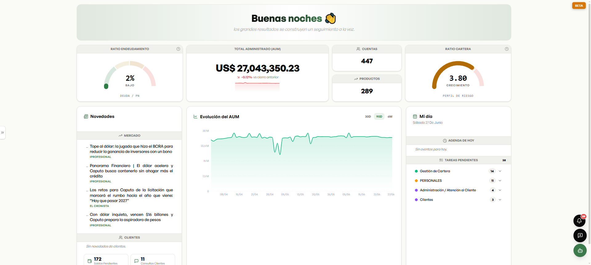

Lo primero que ve el productor cada mañana: la foto de su negocio, lo último del mercado y lo que tiene para hacer hoy. De un vistazo, sabe por dónde arrancar.

Cuánto administra, en pesos y dólares, cómo viene contra el cierre anterior y su ratio de endeudamiento. La salud de su negocio, en vivo y sobre datos reales.
447 cuentas, 289 productos distintos, el ratio y el perfil de riesgo del conjunto — sin abrir una planilla.
El feed de mercado de los medios financieros, ya seleccionado, y lo que pasó con sus clientes — saldos pendientes, consultas. Lo importante, sin tener que ir a buscarlo.
La evolución de lo que administra a lo largo del tiempo — para ver de un vistazo si su práctica crece.
Su agenda del día y sus tareas pendientes, agrupadas — todo en la misma pantalla. Si quiere profundizar en algo, entra al módulo que corresponda.
De acá, todo a un clic: el detalle en Novedades, el cliente en Clientes 360°, las oportunidades en Business Intelligence.